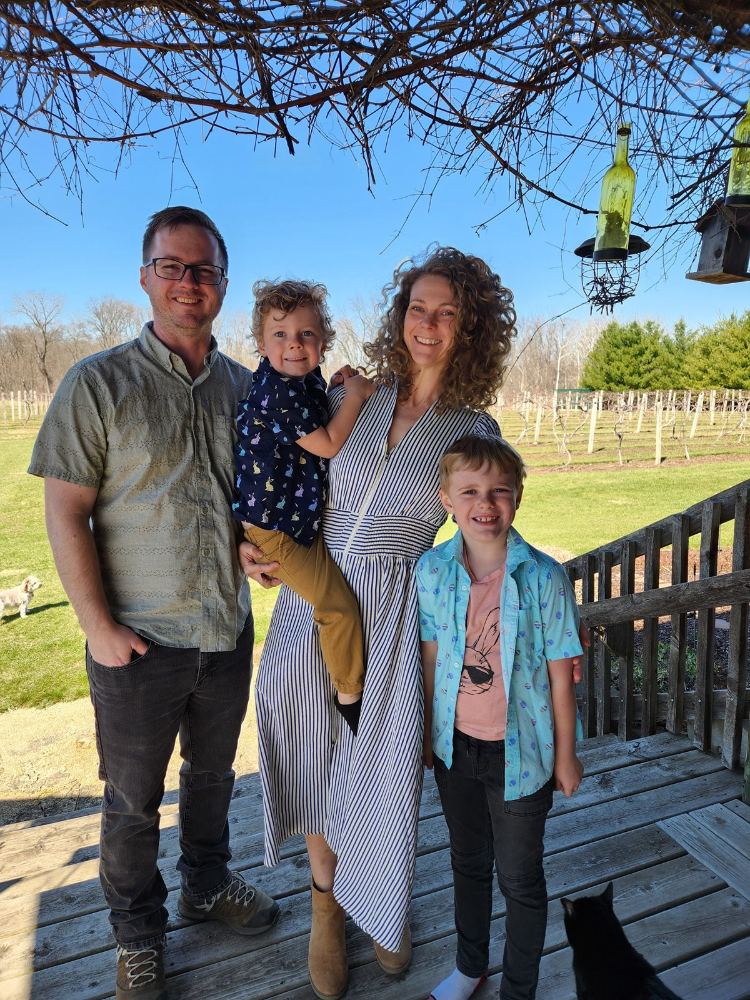
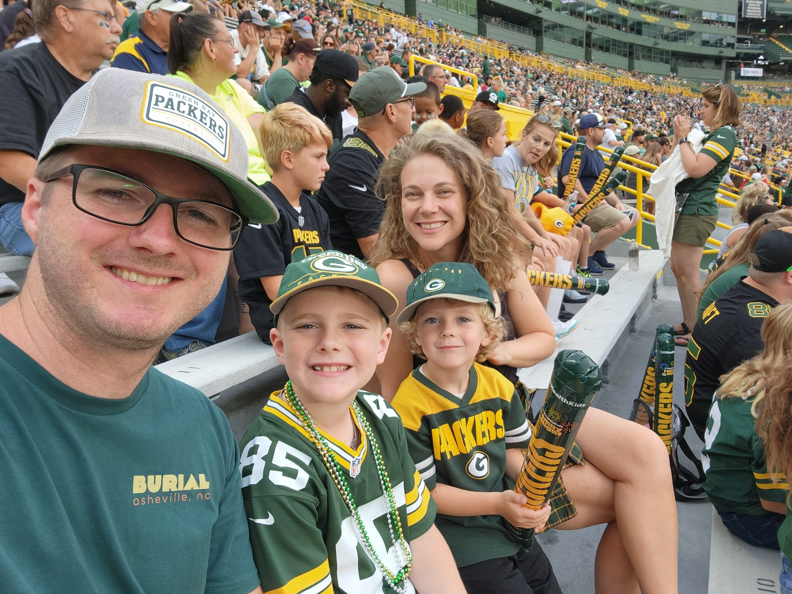
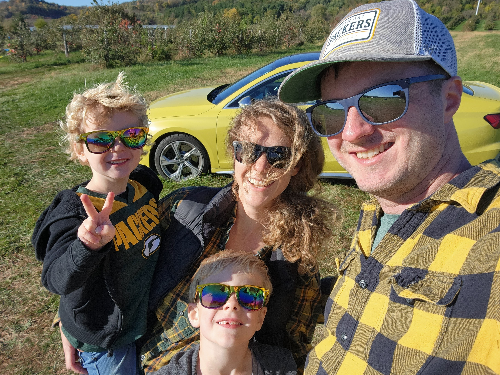

<div animate.enter="fade-in" class="center-container bg-dvLightGray-50">
  <div class="justify-center w-full p-3">
    <div class="mx-auto mb-3 w-52">
      
    </div>
    <div class="justify-center mb-3">
      <div style="text-align: center;">
        <h1 class="mb-1 name-header">Devin Voss</h1>
        <h1 class="mb-1 title-header">Lead Front-End Software Engineer</h1>
        <div class="flex justify-center gap-2 mx-auto">
          <a href="https://www.linkedin.com/in/devin-voss-18548911a/" target="_blank" title="LinkedIn Profile"></a>
          <a class="nav-link" href="../../assets/resume.pdf" target="_blank" title="Resume">
            <i class="material-icons" style="color: #263238;">
              description
            </i>
          </a>
        </div>
      </div>
    </div>
    <div class="flex">
      <div class="max-w-6xl py-3 mx-auto">
        <p>
          I've been working professionally as a software developer since 2015 with a focus in Angular development. I followed along with tutorials in the Angular Beta, which was interesting since many tutorials and documentation
          were quickly outdated by changes in syntax prior to the full release. When Angular was released I was ecstatic because everything just clicked for me, and over ten years later it still does. My first big
          Angular project was piloting an Angular 2 application inside of a .NET application at Marketsharp. Since then I've led the front-end on everything from a COVID-19 testing site that serviced multiple states
          to a healthcare provider application at Optum.
        </p>
        <br>
        <p>
          Today I'm a Senior Front-End Engineer at DroneSense, where I've led the rebuilds of four of our Angular applications, including our mission-critical live operations client for viewing real-time drone video
          and telemetry on a map. I also built a translation automation system that works across all of our Angular apps, and I've become the go-to developer for starting new projects. In 2026 I moved to an
          AI-native workflow, and much like when Angular first came out, it's changed how fast I can learn and build.
        </p>
        <br>
        <p>
          This site was created using an NX monorepo with Angular 22, NestJS, and MongoDB.
        </p>
        <br>
        <p>
          Outside of work, I'm usually watching movies (I keep track of them <a routerLink="/movie" class="underline">here</a>) or playing the drums, which I've done since I was 13. I also grow a new lineup of
          hot peppers every year to make my own crushed pepper flakes. I play tennis, rollerblade, and am a former company-wide table tennis champion. My wife, Micah, and I are raising two sons, Ridley and Zephyr.
        </p>
      </div>
    </div>
    <div class="photo-grid">
      
      <div class="photo-stack">
        
        
      </div>
    </div>
  </div>
  
</div>